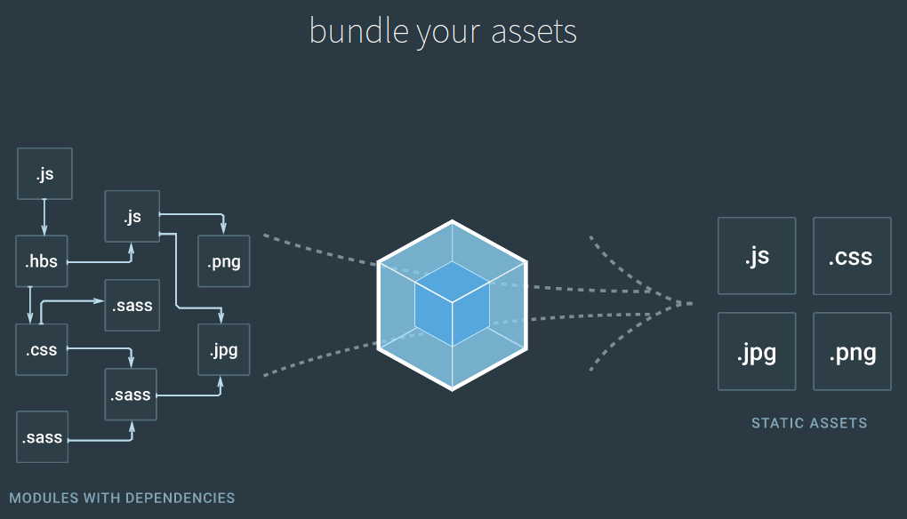

Développeur web
Amateur de fonctionnel
Gérer ses dépendances avec Webpack
whoami
Frontend
Gestion de dépendances
Browserify
require()dans le navigateurFonctionne avec les dépendances npm
Shim de modules node: stream, path, url, buffer, http, etc.
React + JSX
<div>
<h1>Hello from Julien</h1>
<p>Maybe you prefer a hello from Adele</p>
</div>

Gestion de l’arbre de dépendances complet
javascript
css
assets: images, fonts, etc.
Process
Webpack sait parler javascript uniquement
Transformer les fichiers en modules js (loaders)
Parcourir les dépendances en chargeant les fichiers (voir 1.)
Transformer l’arbre des dépendances en appelant les plugins
Done.
Configuration minimale
webpack.config.js
const path = require('path');
module.exports = {
entry: './app.js',
output: {
path: path.resolve(__dirname, 'dist'), //**absolute path**
//publicPath: "https://d24fhjz7aycnpt.cloudfront.net/js/",
filename: 'bundle.js'
}
};Loaders
Transforme un fichier en quelque chose de compréhensible par webpack (js)
Transforme en une chaine de caractères
Extrait les appels de dépendances
Exemple
import stylesheet from 'styles/my-styles.css';
import logo from 'img/my-logo.svg';
import someTemplate from 'html/some-template.html';
console.log(stylesheet);
//"body{font-size:12px}"
console.log(logo);
//"data:image/svg+xml;base64,PD94bWwgdmVyc2lvbj0iMS4wIiBlbmNvZGluZz0iVVRGLTgiIHN0YW5kYWxvbmU9Im5[...]"
console.log(someTemplate);
//"<html><body><h1>Hello</h1></body></html>"Loaders utiles
babel-loader / ts-loader
file-loader / url-loader
sass-loader
css-loader
style-loader
html-loader
Configuration
webpack.config.js (extrait)
module: {
rules: [
{ test: /\.(js|jsx)$/,
use: {
loader: 'babel-loader',
query: { presets: ['es2015', 'react'] }
},
},
{ test: /\.css$/,
use: [ 'style-loader', 'css-loader' ],
},
{ test: /\.(eot|ttf|woff|woff2|svg|png|jpg)/,
use: [
{ loader: 'file-loader',
options: { name: '[name]-[hash:8].[ext]' }
}
],
},
]
},Plugins
Opère des transformations sur l’arbre de dépendances entier
Optimisation des js
Injection de variables d’env
Extraction des styles
Génération de pages html
Plugins utiles
CommonsChunkPlugin
DefinePlugin
ExtractTextWebpackPlugin
HtmlWebpackPlugin
Configuration
webpack.config.js (extrait)
plugins: [
new webpack.optimize.UglifyJsPlugin(),
new webpack.optimize.CommonsChunkPlugin({
name: 'vendor',
minChunks: Infinity,
}),
new webpack.DefinePlugin({
IS_PROD: process.env.IS_PROD,
})
],Conforts
webpack-dev-server
Code splitting
function determineDate() {
require.ensure([], function(require) {
var moment = require('moment');
console.log(moment().format());
});
}
determineDate();Nouvelle syntaxe
function determineDate() {
import('moment').then(function(moment) {
console.log(moment().format());
}).catch(function(err) {
console.log('Failed to load moment', err);
});
}
determineDate();Runtime
Packagé par webpack dans le bundle.js
Bundle vendors
webpack.config.js
const path = require('path');
module.exports = {
entry: {
main: "./src/app.js",
vendor: ['react', 'jquery', 'lodash'],
},
output: {
path: path.join(__dirname, "dist/"),
filename: "[name].js",
},
module: {
rules: [
{
test: /\.(js|jsx)$/,
use: {
loader: 'babel-loader',
query: { presets: ['es2015', 'react'] }
},
},
]
},
plugins: [
new webpack.optimize.CommonsChunkPlugin({
name: 'vendor',
minChunks: Infinity,
}),
],
};Analyse
https://webpack.js.org
Links
[webpack] Site Officiel. https://webpack.js.org/
[webpack2-getting-started] Getting started with webpack 2. https://blog.madewithenvy.com/getting-started-with-webpack-2-ed2b86c68783
[webpack-your-bags] Webpack your bags. https://blog.madewithlove.be/post/webpack-your-bags/